OCR Studio user manual
Welcome to OCR Studio
OCR Studio turns printed pages into accurate, searchable Unicode text — in Eastern Nagari script (Bengali, Assamese, Bishnupriya Manipuri, Sylheti and other languages written in the Bengali–Assamese script) and in English. It is also a corpus builder: every page you check is kept with its source, its permission and, if you like, a recorded reading, ready to export as a language corpus and as training data for better recognition.
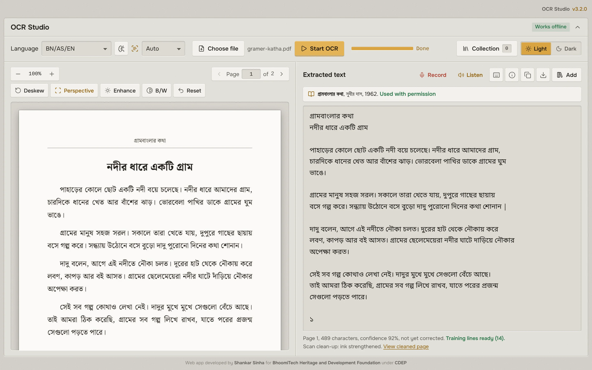
What you can do with it
Read printed pages
Scans, PDFs and phone photos of Bengali, Assamese and English print become editable Unicode text.
◩Rescue poor scans
Straighten, correct perspective, and let automatic clean-up deal with faded, small or speckled print.
✎Proofread and type
Correct the text beside the page, with Eastern Nagari typing on any keyboard.
ⓘRecord the source
Title, author, year, publisher and permission travel with every page you export.
⧉Build a corpus
Collect pages from many books and export them as one corpus, with searchable PDFs per book.
⚙Train for your language
Export line images with their correct text, train a model, and load it back in.
Private and offline
- Nothing is uploaded. Recognition, clean-up and exports all happen inside your browser. Pages, text and recordings stay on your device.
- Works without the internet once it has been opened online. The header shows Works offline when everything is ready.
- No account, no installation. You can also install it as an app (see Installing).
What you need
- A recent Chrome, Edge, Firefox or Safari on a computer, tablet or phone. A computer with a larger screen is most comfortable for proofreading.
- Printed pages, as PDF files or images (JPEG or PNG). Handwriting is not recognised; you can still transcribe it by hand (see Handwritten pages).
- For recording readings: a microphone.
Practice files
The pictures in this manual were made with three sample files you can download and use to follow along:
- gramer-katha.pdf — two pages of a scanned Bengali book; the second page is faded on yellowed paper.
- page2-crooked.jpg — a page scanned slightly crooked.
- photo.jpg — a page photographed with a phone, at an angle.


How to use this manual
- New here? Read The OCR Studio window, then digitise a page with Your first page.
- Building a corpus from a whole book? Read Building a corpus and A digitisation workflow.
- Use the search box at the top (press /). Click any picture to see it full size.
- Buttons are written like Start OCR; keys like Esc.
Getting started
The OCR Studio window
Controls run along the top. The page you are working on is on the left, its text on the right.
- Language and clean-up: which languages to read, models, and scan clean-up.
- File: choose a PDF or image, then Start OCR.
- Progress: what the engine is doing.
- Collection: the pages you have kept, and how many.
- Light / Dark: the look of the app.
- Works offline: ready to use without the internet.
- Zoom the page.
- Pages: move through a PDF.
- Image tools: Deskew, Perspective, Enhance, B/W, Reset.
- The page as it will be read.
- Text actions: record, listen, type, source, copy, save, add.
- Source: the book this page comes from.
- Extracted text: read and correct it here.
- Status line: characters, confidence, training lines, clean-up.
The controls bar
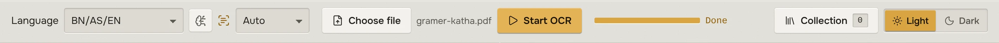
Click the title bar (OCR Studio with the arrow) to fold the controls away and give the page more room; click again to open them. OCR Studio remembers your choice on each device.
The page panel
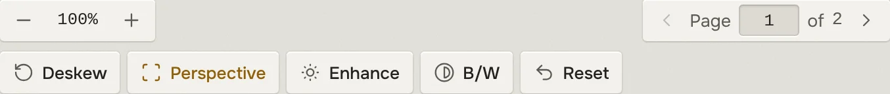
The page panel shows the page exactly as it will be read. The image tools change this picture; see Preparing the page.
The text panel
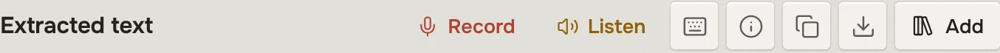
| Button | What it does |
|---|---|
| Record | Records someone reading the page aloud; the recording stays with the page. See Recording a reading. |
| Listen | Reads the text aloud with a machine voice, if one is installed. See Listening. |
| Keyboard | Turns on Eastern Nagari typing in the text box. See Typing Eastern Nagari. |
| ⓘ Source details | Title, author, year, permission and more. See Source details. |
| Copy | Copies all the text. The icon turns into a tick when done. |
| Save | Saves this page as text, searchable PDF, a bundle or training lines. See Saving a page. |
| Add | Adds this page to the collection. See Building a corpus. |
Under the buttons, a line shows the source of the page; click it to edit. Under the text, the status line tells you about the page. Messages appear for a moment at the bottom of the screen.
Getting started
Your first page
From a scanned page to proofread, searchable text in ten steps. Use the sample book if you have nothing to hand.
- Open OCR Studio. Wait for Works offline at the top right the first time; after that it works without the internet.
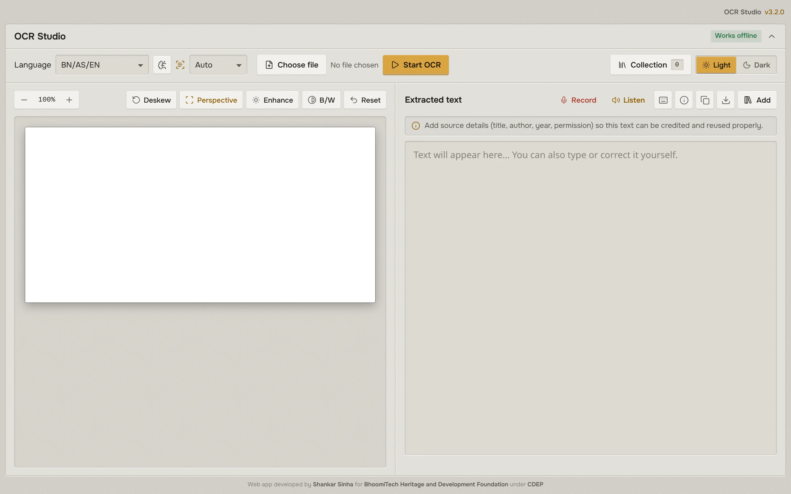
OCR Studio before a file is chosen. - Choose the file. Click Choose file and pick a PDF or a picture of a page. The page appears on the left.
- Say where it comes from. Click the line above the text box (Add source details…) and fill in at least the title, the author and the permission. See Source details.
- Check the languages. BN/AS/EN reads Bengali, Assamese and English. Choose a narrower setting if the page uses fewer (see Choosing languages).
- Straighten if needed. If the page is crooked or photographed at an angle, use Deskew or Perspective. Leave scan clean-up on Auto.
- Click Start OCR. A few seconds later the text appears on the right.
- Proofread. Compare the text with the page and correct mistakes. Keep one line of text for each printed line, so the page can also become training data.
- Check the status line. It should say corrected and Training lines ready.
- Keep it. Click Add to put the page into your collection, or the save button for a text file or searchable PDF.
- Next page. For a PDF, click the arrow beside the page number and repeat from step 5. The source details stay the same for every page of the file.
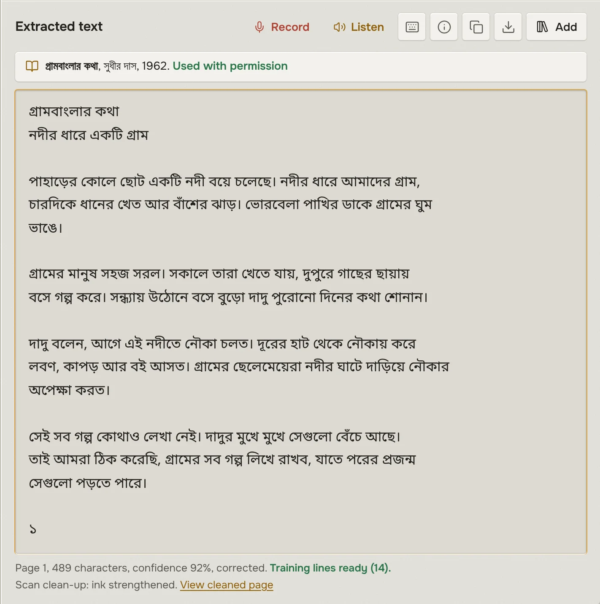
Working with pages
Opening pages
OCR Studio reads PDF files and pictures of pages. One page is shown and read at a time.
Choosing a file
Click Choose file. Its name appears beside the button.
- PDF: scanned books and documents. Each page is read separately.
- Pictures: JPEG and PNG work everywhere. Some formats (for example HEIC photos from iPhones) may not open; the app then says This image format cannot be opened. Try JPEG or PNG. Save or export the photo as JPEG first.
Choosing a new file clears the text box and any recording. Text you have not added or saved is lost, so keep your page first.
Moving through a PDF
For a PDF, Page 1 of N appears above the page. Use the arrows, or type a page number and press Enter. The text box keeps the text of the page you last recognised until you start OCR on the new page.
Zoom
− and + change the zoom from 50% to 300%. Above 100% you can scroll around the page.
Getting good scans
- Resolution: scan at 300 dpi (400 dpi for small print). Grey or colour is better than black and white; let OCR Studio do the conversion.
- Flat and straight: press the book flat; keep the page square to the scanner or camera.
- Phone photos: use daylight without shadows, hold the phone parallel to the page, and fill the frame with the page. Use Perspective afterwards.
- One page per image: a photo of two facing pages is read as one wide page; crop it or photograph each page.
Working with pages
Preparing the page
Straight, clear pages read best. The image tools fix crooked scans and angled photos; automatic scan clean-up helps with faded, small or speckled print.
Deskew: straighten a crooked scan
Deskew measures how far the lines of text slope and turns the page to make them level. It corrects up to 10° either way, and says how much it turned the page.
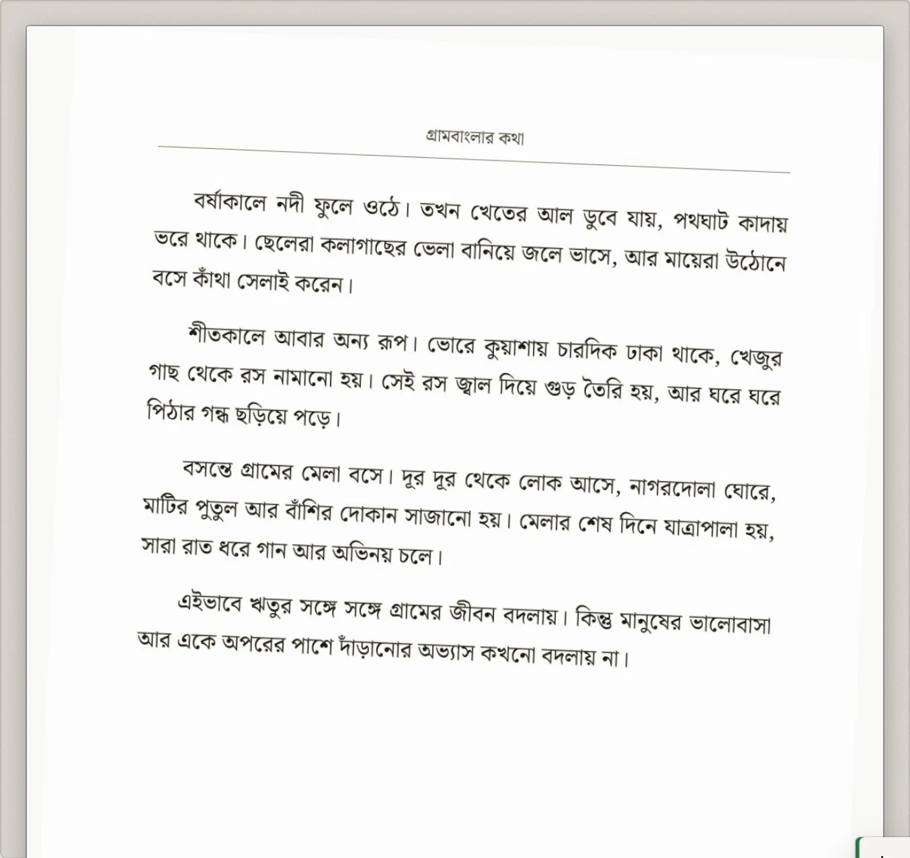
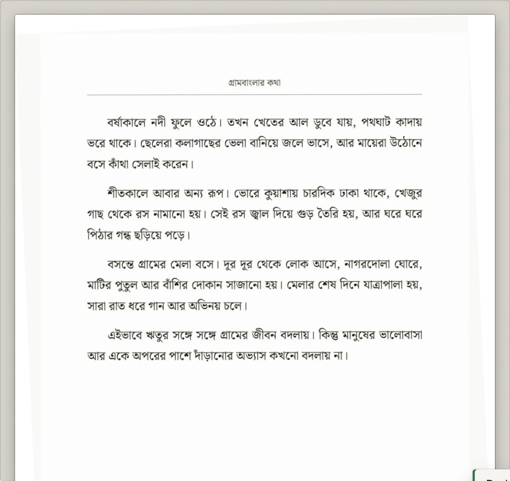
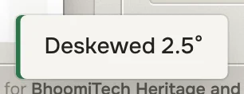
Perspective: flatten a photo taken at an angle
- Click Perspective. Four gold handles appear at the corners of the picture.
- Drag each handle to a corner of the page (or of the printed area).
- Click Apply. The page is stretched into a flat rectangle. Cancel leaves it as it was.
While the handles are showing, Start OCR waits: apply or cancel first.
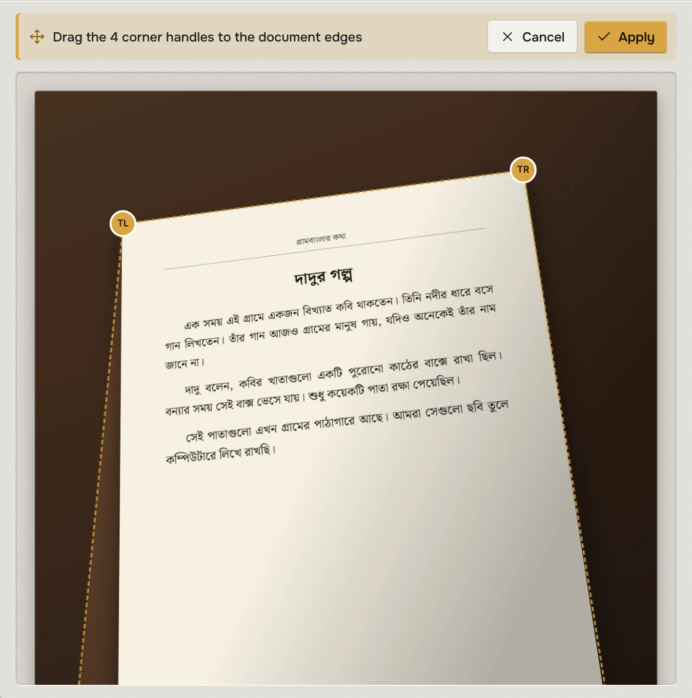
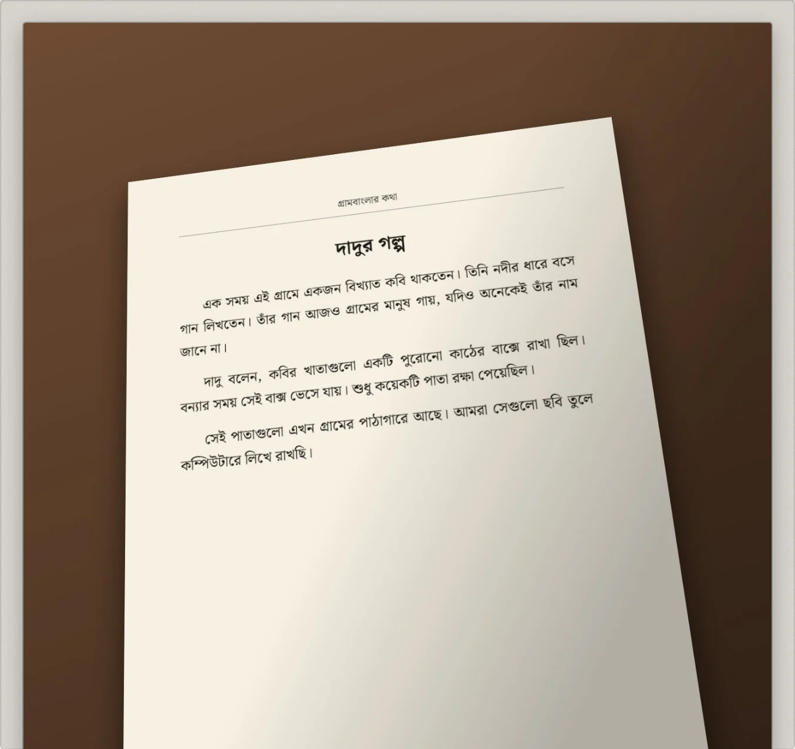
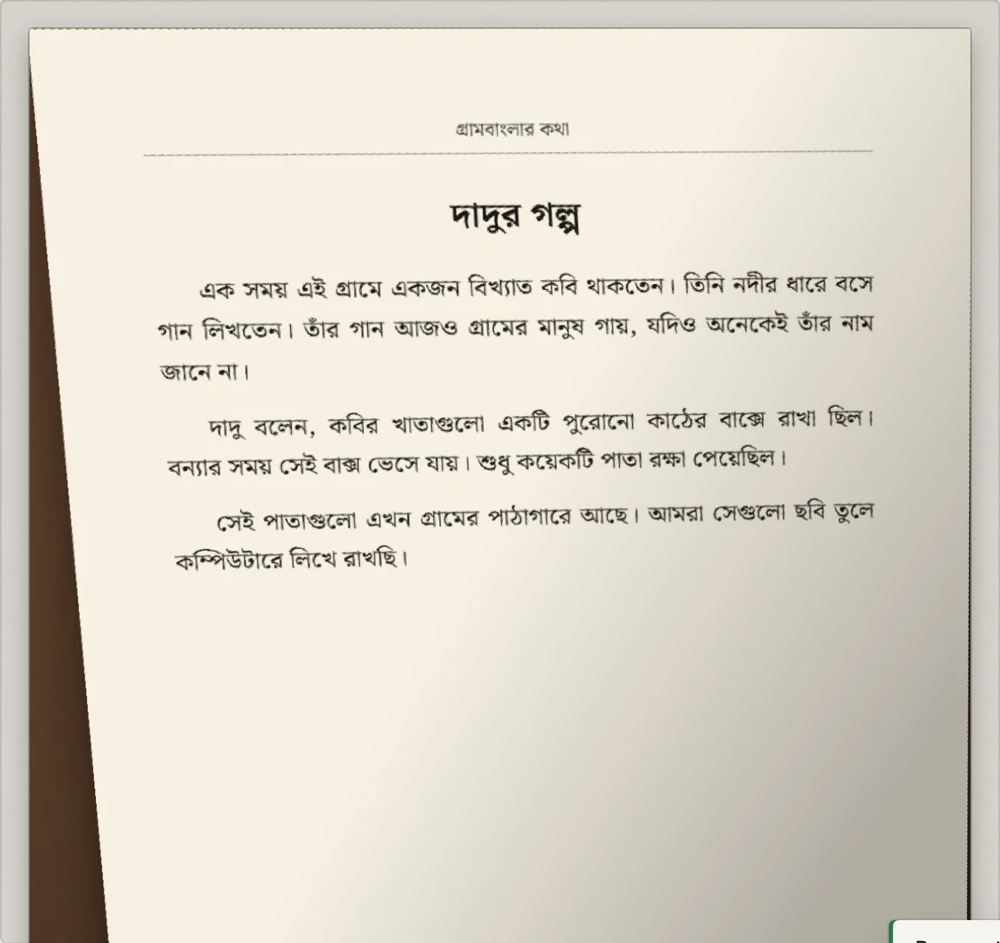
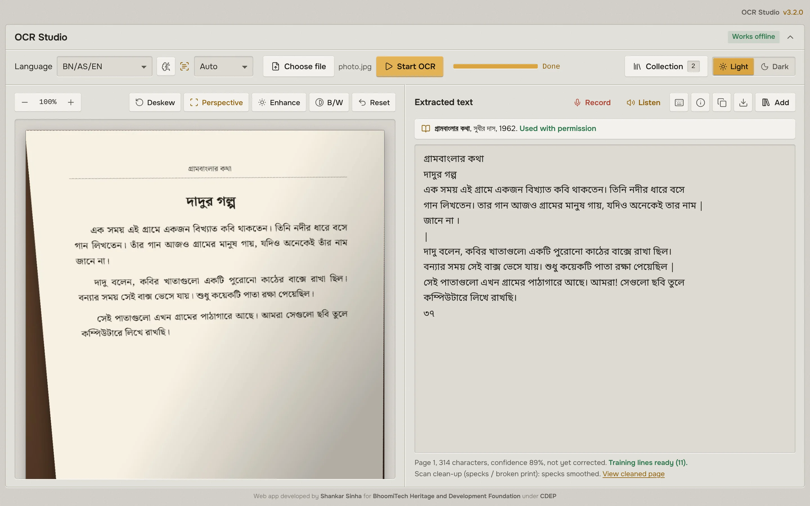
Enhance and B/W
- Enhance turns the page grey and stretches the contrast: faint print becomes darker and yellowed paper lighter.
- B/W turns the page into pure black and white. It can hide stains and show-through from the other side of the paper, but it can also turn shadows into black patches and break thin strokes.
- Reset undoes every image correction and shows the page as it is in the file.
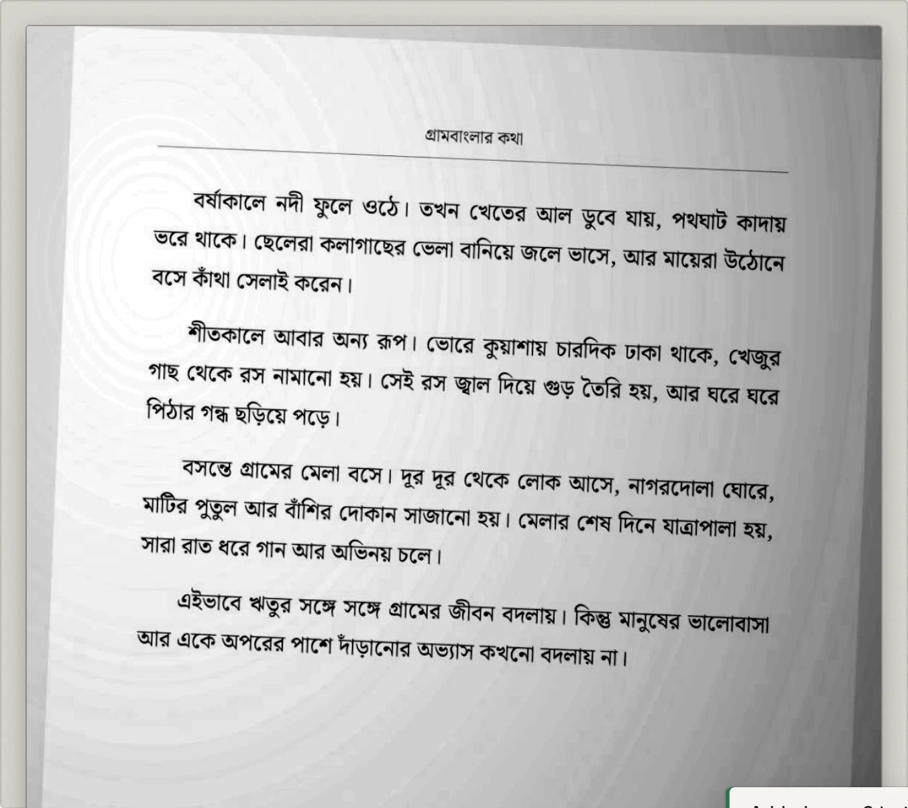
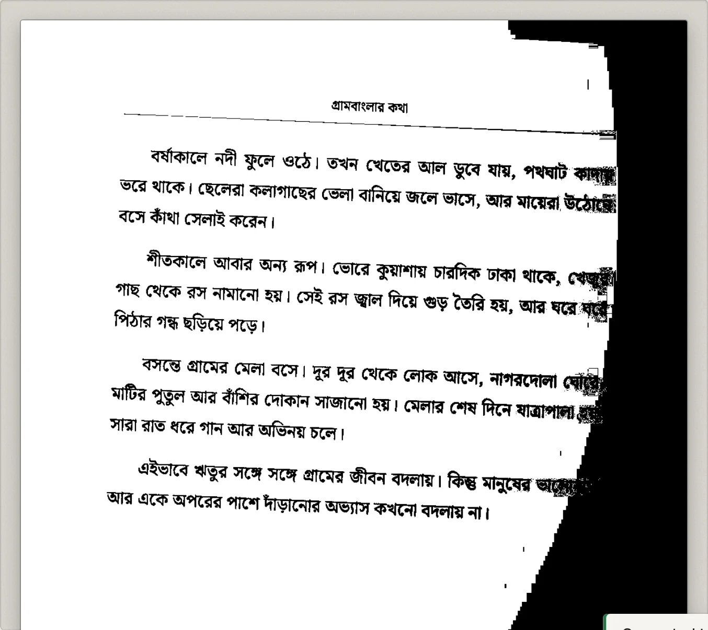
You often don’t need either: scan clean-up treats a copy of the page automatically, and tests showed black-and-white conversion usually makes recognition worse. Try Enhance or B/W when a page reads badly with clean-up alone.
Automatic scan clean-up
Before reading, OCR Studio measures the scan — line spacing, stroke thickness, paper evenness, ink contrast and specks — and cleans a copy of the page to suit it. The page on screen, the searchable PDF and the training lines keep the original picture.
| Setting | What it does |
|---|---|
| Auto (default) | Measures the page and applies only what it needs. Use this unless a book keeps reading badly. |
| Off | Reads the page exactly as shown. |
| Faded | Evens out the background and strengthens faint ink (and enlarges small text): faded print, yellowed or uneven paper, shadows. |
| Low-res | Enlarges small or low-resolution text to the size the models were trained on, and strengthens thin strokes. |
| Heavy ink | For thick, bold or bleeding print: evens the background without thickening. |
| Specks | Smooths away specks on broken, dotty print. |
Choose the setting in the menu with the scan icon, next to Language. OCR Studio remembers it on each device. After recognition, the status line says what was found and done, for example Scan clean-up (faded): background evened, ink strengthened. Click View cleaned page to see the copy the engine read.
The sample book’s second page is faded print on yellowed, unevenly lit paper. With clean-up on Auto it was recognised at 92% confidence, and the status line reported:
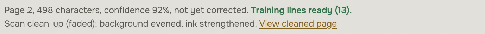
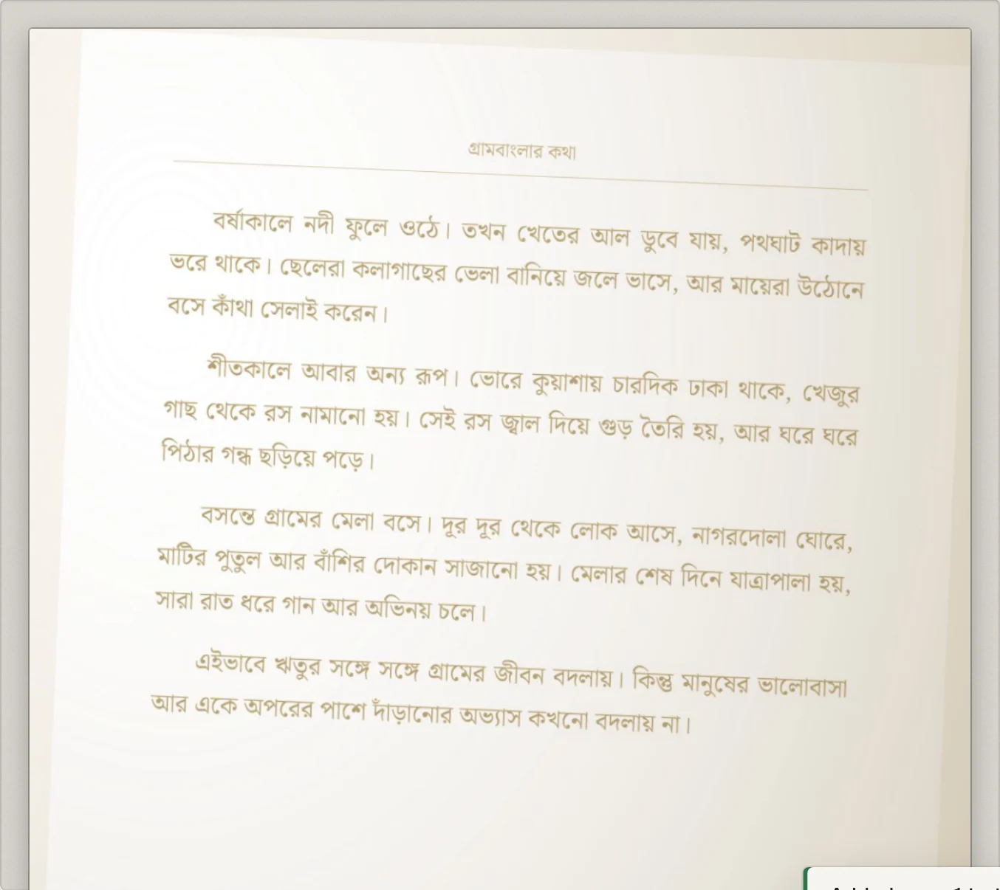
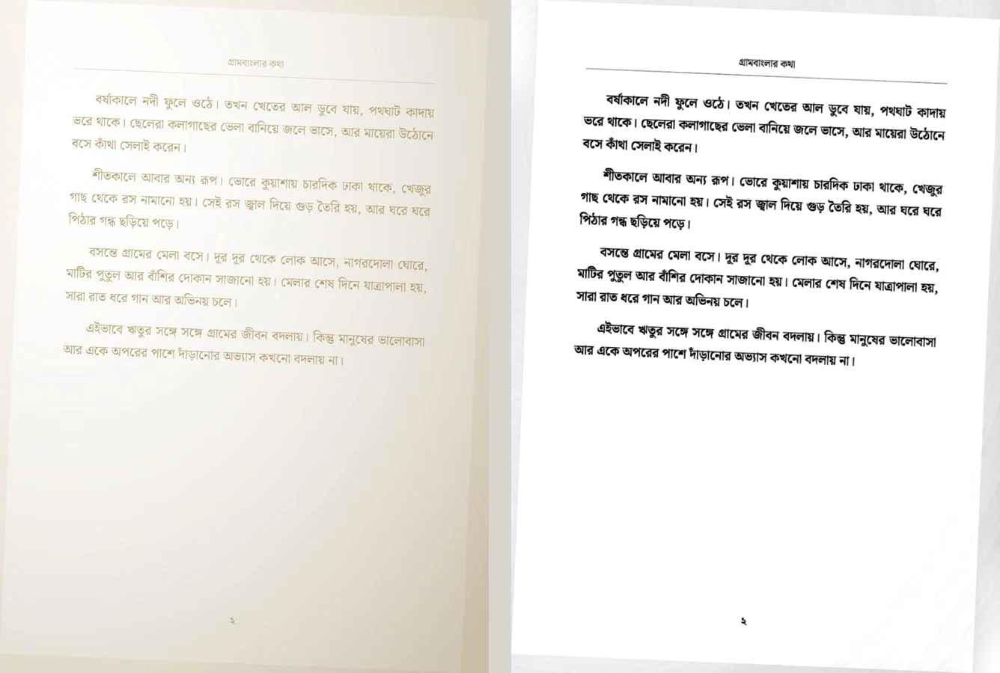
On test pages in Bishnupriya Manipuri, clean-up cut the share of wrongly read characters on faded pages from 27% to 7%, on low-resolution pages from 20% to 9%, and on phone photos with shadows from 6% to 4%.
Working with pages
Recognising text
Choose the languages on the page and start OCR. The recognised text appears on the right, with a status line that tells you how it went.
Choosing languages
| Setting | Reads |
|---|---|
| BN/AS/EN (default) | Bengali, Assamese and English together. Good for mixed pages and for languages like Bishnupriya Manipuri that use letters from both Bengali and Assamese (such as ৰ and ৱ). |
| BN/AS | Bengali and Assamese, no English. Fewer stray Latin letters on pages with no English. |
| BN | Bengali only. |
| AS | Assamese only. |
| EN | English only. |
| Your models | Models you have added, alone or with English. See Language models. |
The narrowest setting that covers the page usually gives the fewest mistakes. OCR Studio remembers your choice.
Start OCR
Click Start OCR. The progress bar shows Loading engine…, Cleaning up the scan…, then a percentage, then Done. A page usually takes a few seconds; the first page after opening the app or changing languages takes a little longer while the engine starts. The text box is replaced with the new text.
If a recording belonged to a different page, it is removed when you recognise a new page (the app tells you). Add or save a page before moving on.
The status line
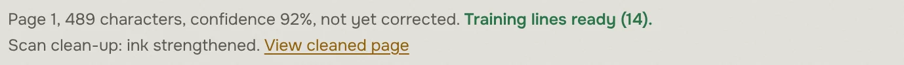
| It says | Meaning |
|---|---|
| Page 1 | Which page of the file the text is from. |
| 489 characters | Letters and signs in the text (spaces not counted). |
| confidence 92% | How sure the engine was, on average. Above 90% usually means few mistakes; below 70% means the page needs careful checking, or better preparation. |
| not yet corrected / corrected | Whether you have changed the machine’s text. Every page should be proofread before it goes into a corpus. |
| Training lines ready (14) | Your text has exactly one line for each printed line, so the page can be exported as training data. See One line per printed line. |
| Scan clean-up… | What automatic clean-up found and did, with a link to view the cleaned copy. |
For text you typed without running OCR, the line shows just the number of characters, marked (typed).
Text
Proofreading & typing
Machine reading is never perfect. Proofreading turns it into text you can trust, and makes every page more valuable for the corpus.
Correcting the text
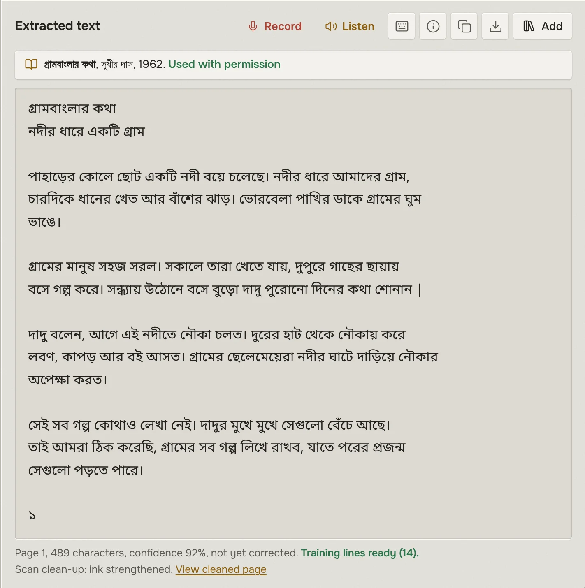
|.Read the text against the page line by line and type your corrections straight into the box. Common machine mistakes in Eastern Nagari:
- Long and short vowel signs swapped: ু / ূ, ি / ী.
- The danda । read as
|orI. - র and ৰ, ব and ৱ confused, especially with BN/AS/EN.
- Conjuncts read as separate letters, or the other way round; missing ঁ (chandrabindu).
- Page headers, page numbers and footnotes read into the text. Keep or remove them consistently across a book.
Text is saved as Unicode in the standard composed form (NFC), so letters with the same appearance are stored the same way.
One line per printed line
To export a page as training lines (line pictures paired with their correct text), the text must have exactly one line for each printed line on the page. Don’t join lines into paragraphs and don’t split them. Blank lines are ignored.
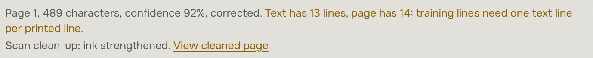
The text itself is still saved and collected when the counts differ; only training lines are left out.
Typing Eastern Nagari
The keyboard button above the text turns on Eastern Nagari typing in the text box itself: type Roman letters and the word appears in script at the cursor as you type.
- Space, Enter, a click or an arrow key finishes the word.
- Backspace while still in the word corrects its Roman spelling; the bar under the text shows the Roman letters of the word in progress.
- Press the button again, or Esc, to go back to normal typing.
It follows the LexiPic Bishnupriya Manipuri typing rules (for example, r gives ৰ and w gives ৱ). Check the key table below for every key.
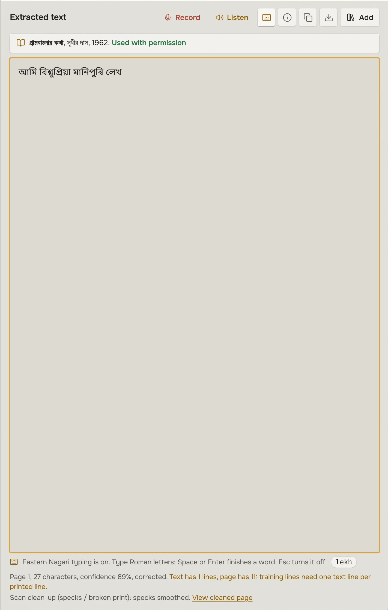
ami bishnupriya manipuri lekh…; the word in progress is shown in the bar below.Try it here
This box uses the same typing engine and rules as OCR Studio.
Key table
Drawn from OCR Studio’s typing rules, so it always matches the app. Longer keys win: kh gives খ, not ক + হ.
Loading…
Handwritten pages
No available model reads handwritten Eastern Nagari reliably. Instead, open the photo or scan, zoom in on the left, and type the text on the right with Eastern Nagari typing. Typed pages can be saved, added to the collection and saved as searchable PDFs like any other; they are marked manual transcription.
Copy and paste
The copy button copies all the text. Right-clicking in a text field (the text box, source details, model fields) opens a small menu with Copy and Paste. Right-click is switched off elsewhere in the app. On phones and tablets, press and hold for the system’s own menu.
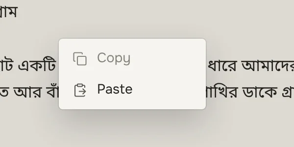
Corpus
Source details
Text without a source can’t be cited, credited or shared with confidence. Source details are written into every export of the page.
Filling them in
Click the line above the text (or the ⓘ button). Fill in what you know and click Save details.
- Title, Author / creator, Year.
- Publisher / source: publisher, library, or family collection.
- Edition / volume.
- Language: Bishnupriya Manipuri, Assamese, Bengali, Sylheti, English or Other (say which in Notes).
- Script: Eastern Nagari, Latin, Meetei Mayek or Other.
- Permission: see below.
- Digitised by: your name or group.
- Place: where the original is kept.
- Notes: anything else.
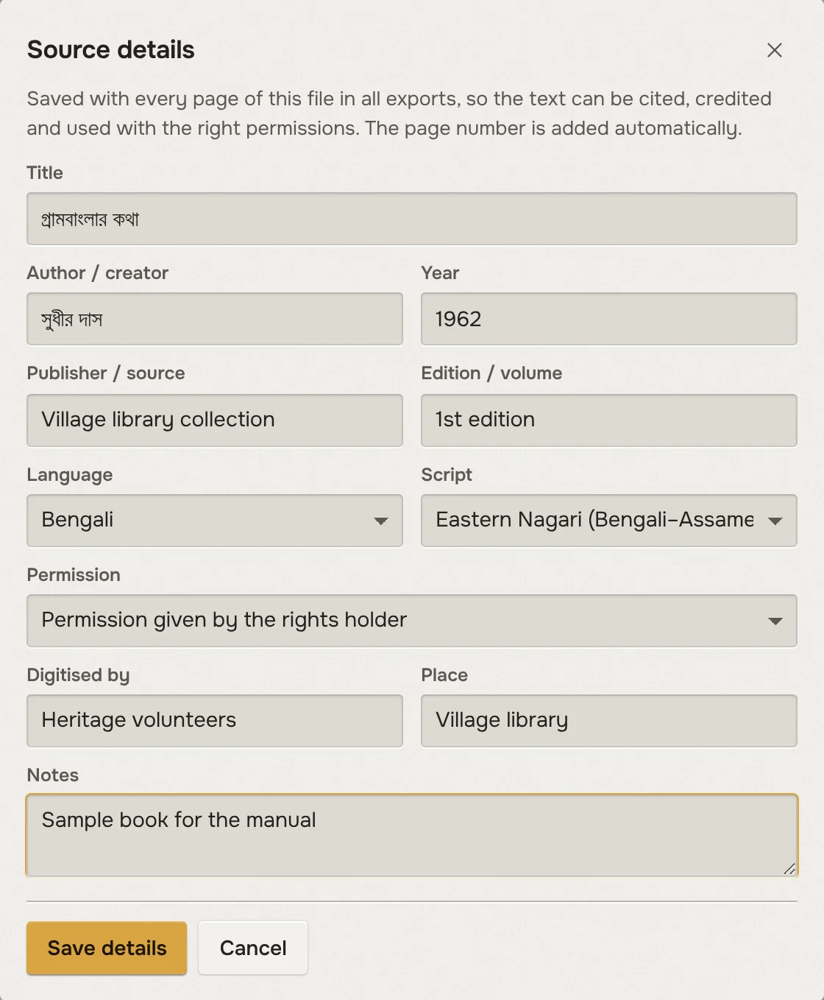
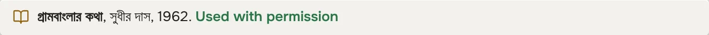
Permission
| Choice | Use it when |
|---|---|
| Not yet known (default) | You haven’t checked. Find out before sharing the text. |
| Public domain / copyright expired | The work is out of copyright. |
| Permission given by the rights holder | The author, family or publisher agreed. |
| Published under an open licence | For example Creative Commons; name the licence in Notes. |
| Community use only: do not publish | The text may be used within the community but not published. Exports and PDFs carry a warning. |
What OCR Studio remembers
- Details are kept per file (by its name and size): open the same book again and its details come back. Every page of a PDF shares them.
- For a new file, Digitised by, Language and Script are filled in from the last file, since they rarely change.
- The page number is added automatically. A single picture always counts as page 1, so for photos of individual pages write the real page number in Notes (for example Page 37).
Exports
Saving a page
The save button (download arrow) offers four ways to save the current page. Files are named after the title and page, for example গ্রামবাংলার-কথা_p001.txt.
Text file (.txt)
Your corrected text, UTF-8 Unicode (NFC).
Searchable PDF
The page picture with your corrected text laid invisibly over it, word by word. Searching, copying and screen readers give the proofread words, not the machine’s first reading. The PDF’s properties hold the title, page, author, language, year, publisher, permission and who digitised it; pages marked Community use only say so.
Pages typed by hand can be saved as searchable PDFs too; the text is laid down the page in reading order.
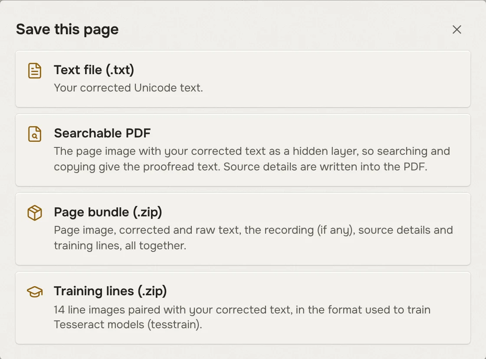
Page bundle (.zip)
Everything about the page in one folder:
গ্রামবাংলার-কথা_p001/ page.jpg the page picture text.txt your corrected text recognised.txt the machine’s text, before correction reading.wav the recorded reading, if any searchable.pdf metadata.json source details and how the page was made training/ line pictures and their text, if the lines match
Training lines (.zip)
One picture of each printed line (…_001.png) with its corrected text (…_001.gt.txt), the format used by tesstrain to train Tesseract models. Available when the text has one line per printed line; otherwise the dialog explains why not.
What metadata.json holds
From the sample book:
{
"title": "গ্রামবাংলার কথা",
"author": "সুধীর দাস",
"year": "1962",
"publisher": "Village library collection",
"language": "ben",
"script": "Beng",
"rights": "permission",
"rights_label": "Used with permission",
"digitised_by": "Heritage volunteers",
"file_name": "gramer-katha.pdf",
"file_page": 1,
"method": "ocr",
"ocr": { "engine": "Tesseract 5 LSTM …", "languages": "ben+asm+eng", "mean_confidence": 92 },
"proofread": true,
"characters": 489,
"unicode": "UTF-8, NFC",
"training_lines": 14,
"has_recording": false,
"app": "OCR Studio 3.2.0"
}
Corpus
Building a corpus
The collection gathers pages from as many books as you like, on your device, and exports them as one corpus: text, pictures, recordings, source details, training data and a searchable PDF for every book.
Adding pages
When a page is proofread, click Add. The page — picture, corrected and machine text, recording, source details and training lines — is stored on this device, and the count beside Collection goes up.
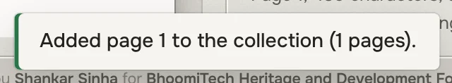
Adding the same page twice keeps two copies; remove the extra one in the collection.
The collection
Click Collection to see every page with its title, page number, characters, whether it was corrected, its training lines, recording and permission.
- The bin button removes one page.
- Clear removes every page from this device, after asking. Export first.
- Export collection (.zip) downloads the corpus.
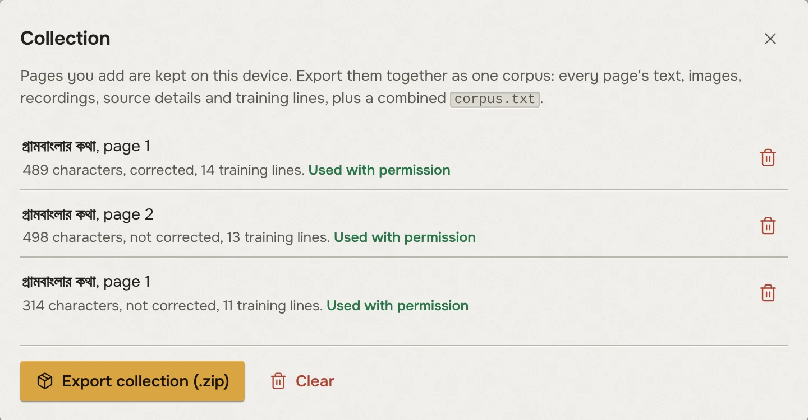
What the export contains
ocr-collection_2026-11-14.zip
README.txt what is in the export, and any pages marked community use only
corpus.txt every page’s text, one after another
corpus.jsonl one line per page: text plus source details and permission
pdf/
গ্রামবাংলার-কথা.pdf one searchable PDF per book, its pages in order
pages/
0001_গ্রামবাংলার-কথা_p001/ a page bundle for each page
0002_গ্রামবাংলার-কথা_p002/
0003_গ্রামবাংলার-কথা_p001/
training/ all training lines from every page, in one folder
- corpus.txt is plain text for reading, searching or word counts.
- corpus.jsonl is for language tools: each line is one page as JSON —
{"id": 1, "folder": "pages/0001_…", "text": "…", "title": …, "rights": …}— with every field of metadata.json. - pdf/ groups pages by title (or by file when there is no title) and puts them in page order, so a book digitised page by page comes out as one searchable PDF.
- training/ is ready for training a model.
rights of every page before publishing. If any page is marked Community use only, the README says how many, and those PDFs carry the warning.Where the collection is kept
The collection lives in the browser’s storage on this device, and OCR Studio asks the browser to keep it permanently. It is still not a backup: clearing browsing data, uninstalling the browser, or a full device can lose it. Export regularly — for example after every book or every working day — and keep the zip files safe. If the device runs out of space, the app says This device is out of storage space. Export and clear the collection.
A digitisation workflow
A routine that works well for a community digitisation project:
- Plan: list the books, check permissions, and agree who digitises what and what to do with headers and page numbers.
- Scan each book to one PDF at 300 dpi (see Getting good scans).
- Open the PDF and fill in the source details once.
- For each page: prepare, Start OCR, proofread (one line per printed line), optionally record a reading, and Add.
- Export the collection at the end of each session and store the zip safely.
- After a few books, train a model from the training lines, and use it for the next books.
Corpus
Recording & listening
A recorded reading turns a page into spoken-language data: text and speech that match, the material needed for speech technology in your language.
Recording a reading
- Click Record. The first time, allow the browser to use the microphone.
- Read the page aloud. The button shows Stop and a timer.
- Click Stop. A player appears above the text.
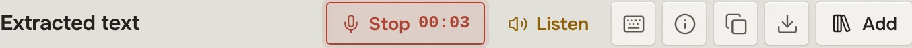
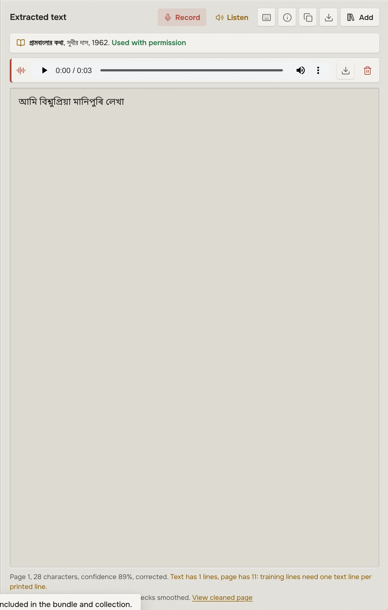
The recording is kept with this page: it goes into the page bundle and the collection as reading.wav (uncompressed WAV, mono). Use the save button to download it on its own, or the bin to discard it. Recognising a different page removes it.
Tips: record in a quiet room, one steady reader, at a natural pace, reading exactly what is printed. A few hours from one reader is a good start for a voice of your own.
Listening with a machine voice
Listen reads the text aloud with a machine voice that runs on the device. Select part of the text to hear only that part; press again to stop.
- Voices are large and are installed by whoever hosts OCR Studio. If none is installed, the app says No machine voice is installed.
- The first time, the app asks before downloading the voice and speech engine (about 70 MB). After that, Listen works offline on that device.
- When several voices are installed, a menu beside Listen lets you choose; the choice is remembered.
- When a reading finishes, a Machine voice bar lets you play it again or save it as
…_machine-voice.wav.
Recognition
Language models
Bengali, Assamese and English models are built in. You can add a model trained for your own language — for example one trained from the pages you have proofread.
Adding a model
- Click the model button next to Language.
- Enter a Code (2–20 lowercase letters, digits or _, for example
bpy) and a Name (for example Bishnupriya Manipuri). - Choose the Model file: a Tesseract 4/5
.traineddatafile, or the same compressed as.gz. - Click Add model. It is selected straight away; run OCR to test it.
Your models appear under Your models in the Language menu, alone and with English. They are stored on this device and work offline. The bin button beside a model removes it.
A damaged or unsuitable file is reported (The language model could not be loaded…) instead of hanging.
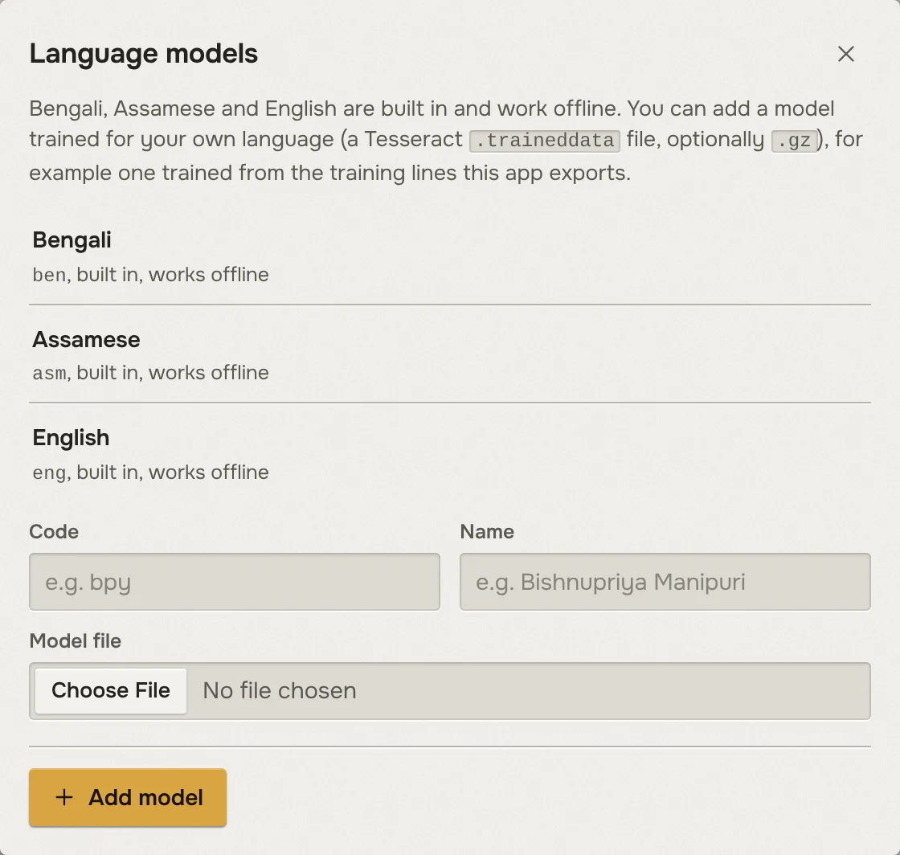
Training a model for your language
- Recognise pages with BN or BN/AS and proofread them, keeping one line of text per printed line, until the status line shows Training lines ready.
- Add the pages to the collection and export it. The
training/folder holds the line pairs. - Train with tesstrain, fine-tuning from the
benorasmmodel. - Load the new
.traineddataunder Language models and select it.
More, and more varied, pages give a better model: different books, fonts and print qualities.
Reference
Look, offline & privacy
Light and dark
The Light / Dark switch at the right of the controls changes the look: Light “Stone” (the default) or Dark “Graphite”. Your choice is remembered on each device. A link can also open the app in one look by adding ?theme=light or ?theme=dark to its address.
The page picture is never recoloured.
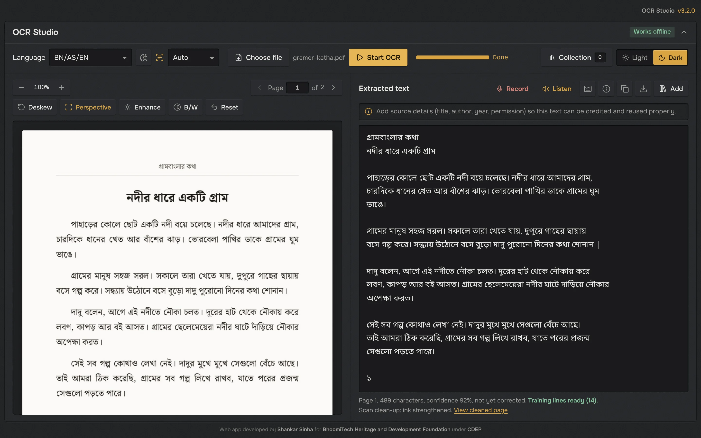
On phones and tablets
On a narrow screen the panels stack: controls at the top, the page, then the text. Everything works the same; proofreading long pages is easier on a larger screen or with a keyboard attached.
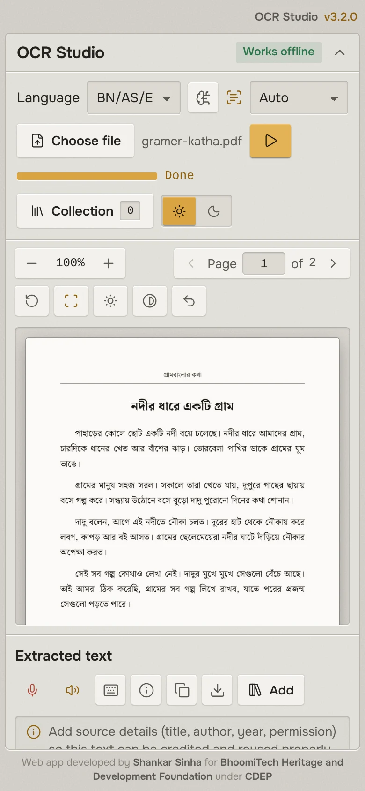
Offline use
The recognition engine and the Bengali, Assamese and English models come with the app. After the first visit, the browser keeps them: the header shows Preparing offline use… and then Works offline. From then on everything works without the internet, except downloading a machine voice the first time.
Installing
To use OCR Studio like an app: in Chrome or Edge, click the install icon in the address bar or the install option in the browser’s menu; on a phone or tablet, use Add to Home Screen.
Updates
When a new version is published, a message says A new version is ready. Tap here to update. Add or save your page, then tap it; the app reloads with the new version. Your collection, models and source details are kept.
Privacy and your data
- Pages, text, recordings, the collection, your models and source details are stored only in this browser on this device. Nothing is sent anywhere.
- Another browser or device has its own, separate collection.
- Clearing the browser’s site data for OCR Studio deletes them. Export first.
Help
Troubleshooting & FAQ
The text is full of mistakes.
- Check the language setting matches the page.
- Straighten the page (Deskew or Perspective).
- For a PDF with small print, zoom in before Start OCR so the page is drawn in more detail.
- Try a clean-up setting (Faded, Low-res, Specks) instead of Auto, or Enhance.
- Rescan at a higher resolution if you can.
Deskew turned the page the wrong way.
This happens on faded pages and pages with dark edges or shadows. Click Reset and use Perspective instead.
My Deskew / Enhance disappeared.
Changing the zoom or the page draws the page again from the file. Set the zoom first, then correct.
Start OCR does nothing, or says “Choose a file first”.
Choose a file first. If Perspective handles are showing, click Apply or Cancel. If the button is greyed, recognition is still running.
“Recognition failed” or “The language model could not be loaded”.
For a built-in language, reload the page once while online. For a custom model, the file may be damaged or not a Tesseract 4/5 LSTM model; remove it and add a good copy.
“This image format cannot be opened.”
Convert the picture to JPEG or PNG (many phones save HEIC by default).
The save dialog says training lines aren’t available.
The text must have one line for each printed line. The status line shows the two counts; join or split lines until they match. Training lines also need OCR to have been run on the page.
Recording doesn’t start.
The browser was not allowed to use the microphone. Allow it in the site settings (the icon at the left of the address bar) and try again.
Listen says no voice is installed.
Machine voices are optional and have to be installed on the website by whoever hosts OCR Studio. Ask them, or record readings instead.
“This device is out of storage space.”
Export the collection, keep the zip safe, then clear the collection to free space.
My collection is empty.
The collection belongs to one browser on one device. Check you are using the same browser, not a private window. If browsing data was cleared, the collection is gone; use your last export.
Right-click doesn’t work.
By design, right-click works only in text fields (Copy and Paste). Use the copy button or the keyboard shortcuts of your system elsewhere.
Reference
Glossary
| OCR | Optical character recognition: a program reading the letters in a picture of text. |
| Corpus | A large, organised collection of texts (and sometimes recordings) in a language, used for research, dictionaries and language technology. |
| Eastern Nagari | The Bengali–Assamese script, used for Bengali, Assamese, Bishnupriya Manipuri, Sylheti and other languages. |
| Unicode, NFC | The international standard for storing text. NFC is its composed form, in which letters that look the same are stored the same way. |
| Confidence | How sure the engine was of its reading, as a percentage averaged over the page. |
| Searchable PDF | A PDF that shows the page picture, with the text hidden underneath so it can be searched and copied. |
| Training lines | Pictures of single printed lines paired with their correct text, used to teach a recognition model. |
| Model / traineddata | The file that teaches Tesseract one language or script. |
| Tesseract | The open-source recognition engine inside OCR Studio (version 5, LSTM). |
| tesstrain | The official tools for training Tesseract models. |
| Deskew | Turning a crooked page so its lines are level. |
| Perspective correction | Flattening a page photographed at an angle into a rectangle. |
Reference
What’s new
3.2.0 — Scan clean-up
Automatic scan clean-up for faded, uneven, small, low-resolution and speckled print, with Auto, Off and forced settings, a note of what was done and View cleaned page. The auto-correct of 3.1 was removed.
3.0.1 — Typing in the text box
Eastern Nagari typing now works directly in the text box, word by word, with Backspace corrections.
3.0.0 — Corrected searchable PDFs
Searchable PDFs carry your proofread text, placed word by word, with source details in the PDF properties. Collection exports add one searchable PDF per book. Hand-typed pages can be saved as searchable PDFs.
2.3.0 and 2.2 — Listen
Machine voices that run on the device, including a Bengali female voice (SYSPIN, IISc Bengaluru); voice menu; machine readings kept apart from human recordings.
2.1 — New look
Light and Dark looks, the copy-and-paste menu, and messages shown above dialogs.
2.0 — Offline and corpus
Fully offline recognition, a reusable faster engine, saving as text, searchable PDF, page bundle and training lines, the collection, source details, custom language models, Eastern Nagari typing, Enhance and B/W, and recordings kept with the page.